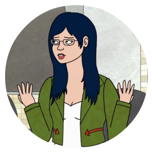
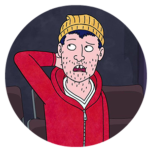
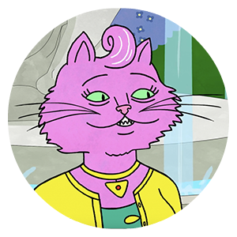
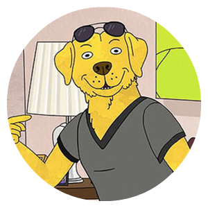
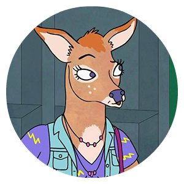
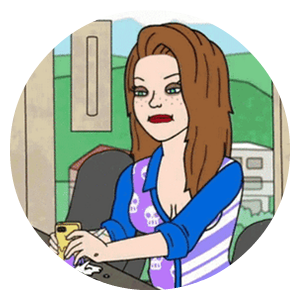

BoJack's Friends






Although BoJack is distant and doesn’t like close relationships, he has a group of friends around him that help him through his times of need.
He often strains and loses relationships with his close friends due to his personal issues and poor choices. BoJack is plagued by his utter self-loathing and struggle to accept himself, this depressed side of his nature often comes out when with his close friends. Because of this, he finds himself haunted by his past on a regular basis with flashbacks of corrupted relationships—especially his mother and ex-best friend.